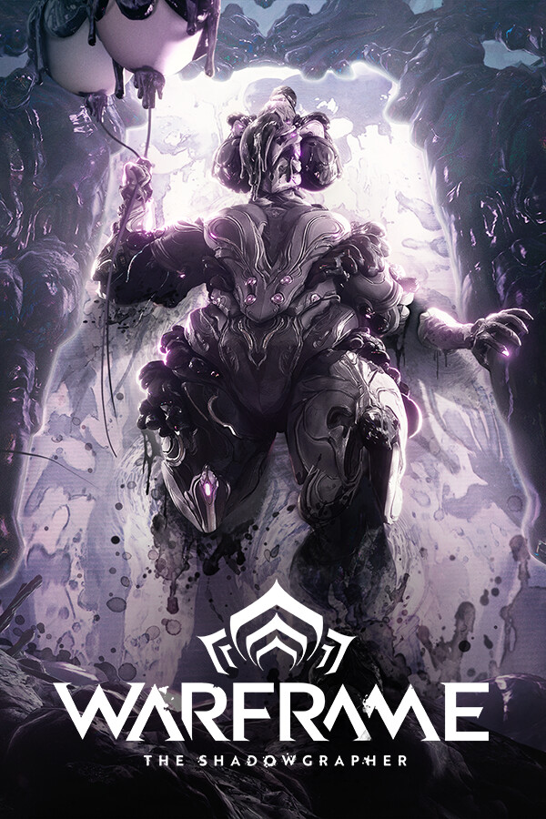

Quien es Luis en realidad?
Luis Esteban Salazar, es un estudiante interesado en la informatica, la programacion, la edicion de videos y la reparacion de computadoras. FOX es el nombre que utiliza en la mayoria de los videojuegos y redes sociales, gracias al cual ha conocido a muchas personas y ha hecho grandes amistades. Con el paso del tiempo, FOX dejo de ser solo un nombre de usuario y se convirtio en una parte importante de su identidad digital. Su personalidad se caracteriza por el buen humor. Ademas, se destaca por su curiosidad y su interes constante por aprender cosas nuevas relacionadas con la tecnologia y los videojuegos.
Sobre mi
Nombre y apellido: Luis Esteban Salazar
Edad: 19 anos
Pais: Argentina
Provincia: Tucuman
Localidad: Las Talitas Tafi Viejo
Profesion: Estudiante
Hobbies: videojuegos, programacion, edicion de videos, reparacion de computadoras
Mis Redes Sociales
Steam: FOX
Instagram: @fox_black_808
TikTok: @fox_black_808
Mis Juegos Favoritos

Half-Life 2

Portal 2

The Outlast Trials

Borderlands 2

Warframe

Hollow Knight

Resident Evil Biohazard

No, I'm not Human
Mis Metas
Mi principal meta es convertirme en un programador experto, capaz de crear software innovador.
Mi segunda meta es ser ingeniero en sistemas y poder vivir de lo que me gusta hacer.
Mi tercera meta es poder conseguir una Xbox Series S y poder mejorar mi computadora.
Mi ultima meta es poder crear una aplicacion o un videojuego reconocido y utilizado por muchas personas en todo el mundo.
Musica Favorita
Charlie's Inferno - That Handsome Devil